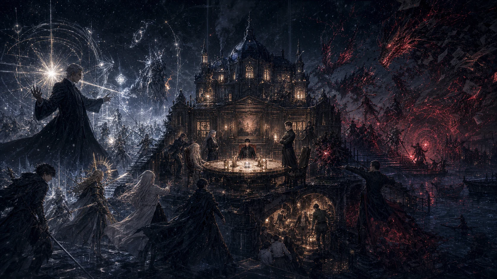

WORLD · 001
东湖市
循环第七日 / 冬季 / 架空都市
跨年烟火升起时，天空像玻璃一样裂开。圣杯试图分配所有人的位置，却无法解释一群保留轮回记忆的“空白变量”。
“你们不是被选中的英雄。你们是一个错误系统无法命名的人。”
关键地点12
主要人物23
循环上限03
PRIVATE TRPG COLLECTION · 001
这里收藏关于轮回、抉择与未知的原创跑团模组。愿每一位夜航者，都能在故事落幕前找到自己的航标。

NULL GRAIL
NO. 001 错误不会自动成为命运。

AUTHOR EDITION · FULL SPOILERSOPEN SHELVES
从无剧透简介开始，选择适合今晚的故事。守秘资料与玩家资料均有明确标识。
显示 8 份档案
目前没有符合条件的档案。CoC 与 D&D 书架已经预留，下一份作品可以直接加入。
WORLD INDEX
模组不是孤立的文件。地点、人物与事件在这里彼此照亮，形成可以反复抵达的世界。
WORLD · 001
循环第七日 / 冬季 / 架空都市
跨年烟火升起时，天空像玻璃一样裂开。圣杯试图分配所有人的位置，却无法解释一群保留轮回记忆的“空白变量”。
“你们不是被选中的英雄。你们是一个错误系统无法命名的人。”
KEEPER'S NOTES
一些关于版本、边界与“为什么这样写”的记录。也许它们能成为下一次开团时的一盏小灯。
统一规则口径，补齐玩家安全边界与跨册索引。
把人物的决定权写进机制，而不只是写进台词。
用事件卡、人物卡与发放索引减少临场翻找。
ABOUT THE ARCHIVIST
这里是一座私人创作档案馆，保存原创或同人跑团模组、玩家资料与主持工具。馆主偏爱都市异闻、角色抉择、轮回结构，以及不会被一次失败锁死的故事。
本站所涉规则及相关作品版权归原权利方所有；同人内容仅作非商业交流与展示。转载或开团使用前，请保留作者署名与版本信息。